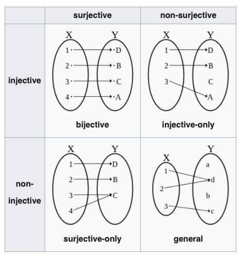

예비개념1: 귀류법
- 귀류법: 니 논리 대로면… <- 인터넷 댓글에 많음..
님 논리대로면..
- XXX가 문제 없으면 서울 전체가 문제가 없고 (애초에 서울은 문제도 아니라는데 왜 이소리는 하고 계신지 모르겠지만)
- 수도권 모 대학이 문제가 없으면 전체가 문제가 없겠네요?
- 지방도 1개 대학이 문제가 없으니 전체가 문제 없겠네요?
와우! 모든 문제가 해결되었습니다! 출산율 감소로 인한 한국대학의 위기가 해결되었.. 아니 애초에 위기가 없었군요!.
어휴.. ㅠㅠref: 하이브레인넷
예비개념2: 일반화
- 연필의 정의: 기도구의 하나. 흑연과 점토의 혼합물을 구워 만든 가느다란 심을 속에 넣고, 겉은 나무로 둘러싸서 만든다. 1565년에 영국에서 처음으로 만들었다.
- 질문: 아래는 연필인가?

cardinality
- \(A=\{2,4,6\}\) \(\Rightarrow\) \(|A|=3\), \(A\) has a cardinality of 3.
- \(A=\{1,2,3,4,\dots,\}=\mathbb{N}\) \(\Rightarrow\) \(|A|=?\)
- Cardinal number: 유한집합에서의 “갯수”라는 개념을 좀 더 일반화 하여 무한집합으로 적용하고 싶다.
- 유한집합: 우리가 친숙한 size 와 그 뜻이 같음
- 무한집합: 무한집합의 경우는 그 동작원리가 조금 더 복잡함
- 질문: \(|\mathbb{Q}| < |\mathbb{Q}^c|\) ??
Bijection, injection and surjection (예비학습)

- 용어 정리
- surjective = onto = 전사 = 위로의 함수
- injective = one-to-one = 단사 = 일대일 함수
- bijective = one-to-one and onto, one-to-one correspondence = 전단사 = 일대일 대응
- 성질1: 어떤함수가 전사함수 & 단사함수 \(\Rightarrow\) 전단사함수
- 성질2:
- 집합 \(X\)에서 집합 \(Y\)로 가는 injective function이 존재한다. \(\Rightarrow\) \(|X| \leq |Y|\)
- 집합 \(X\)에서 집합 \(Y\)로 가는 surjective function이 존재한다. \(\Rightarrow\) \(|X| \geq |Y|\)
(예비학습 끝)
- 성질1~2로 유추하면 아래와 같은 사실을 주장 할 수 있지 않을까?
- 집합 \(X\)에서 집합 \(Y\)로 향하는 bijective function이 존재한다 \(\Rightarrow\) \(|X|=|Y|\)
- 그렇다면 우리가 주장하고 싶은 것은 아래와 같이 된다.
- 유리수집합의 무리수집합의 cardinality는 다르다.
- 유리수집합과 무리수집합사이의 전단사함수는 존재할 수 없다.
유리수집합의 카디널리티
- 우리가 궁극적으로 궁금한것
- 유리수집합과 무리수집합의 카디널리티는 다를까?
- 그냥 궁금한 것
- 자연수의 집합, 양의 정수의 집합, 음의 정수의 집합, 정수의 집합, 짝수의 집합, 홀수의 집합의 카디널리티는 어떠할까?
- (예제1)
집합 \(X=\{1,2,3\}\), \(Y=\{2,4,6\}\)을 생각하자. 적당한 함수 \(f\)를 아래와 같이 정의하자.
- \(f(1)=2\)
- \(f(2)=4\)
- \(f(3)=6\)
아래의 질문에 대답해보자.
- 함수 \(f\)는 정의역의 모든 값에 대해 함수값이 모두 다른가? // \(\forall a,b \in X\), \(a\neq b\) \(\Rightarrow\) \(f(a)\neq f(b)\)?
- 함수 \(f\)는 공역=치역인가?
1의 질문과 2의 질문이 모두 맞으므로 함수 \(f\)는 one-to-one correspondence 이다. 집합 \(X\)에서 집합 \(Y\)로 가는 전단사 함수가 존재하므로 집합 \(X\)와 집합 \(Y\)의 카디널리티는 동일하다.
- (예제2)
집합 \(X=\{1,2,3,\dots \}\), \(Y=\{2,4,6,\dots \}\)을 생각하자. 적당한 함수 \(f\)를 아래와 같이 정의하자.
- \(f(1)=2\)
- \(f(2)=4\)
- \(f(3)=6\)
- \(\dots\)
아래의 질문에 대답해보자.
- 함수 \(f\)는 정의역의 모든 값에 대해 함수값이 모두 다른가? // \(\forall a,b \in X\), \(a\neq b\) \(\Rightarrow\) \(f(a)\neq f(b)\)?
- 함수 \(f\)는 공역=치역인가?
1의 질문과 2의 질문이 모두 맞으므로 함수 \(f\)는 one-to-one correspondence 이다. 집합 \(X\)에서 집합 \(Y\)로 가는 전단사 함수가 존재하므로 집합 \(X\)와 집합 \(Y\)의 카디널리티는 동일하다.
- \(\aleph_0\)
- 자연수집합 \(\mathbb{N}\)의 카디널리티는 \(\aleph_0\)이다. 즉 \(|\mathbb{N}|=\aleph_0\).
- 짝수인 자연수 집합의 카디널리티는 \(\aleph_0\)이고, 홀수인 자연수 집합의 카디널리티는 \(\aleph_0\)이다.
- 정수집합 \(\mathbb{Z}\)의 카디널리티는 \(\aleph_0\)이다. 즉 \(|\mathbb{Z}|=\aleph_0\).
- 느낌: \(\aleph_0\)를 2배,3배,4배 하여도 \(\aleph_0\)이다.
- 즉 무한집합의 경우, 본인과 카디널넘버가 같은 진 부분집합이 존재할 수 있다. (유한집합에서는 불가능하겠지)
- 무한집합의 정의: 집합 \(A\)가 무한집합이다. \(\Leftrightarrow\) \(A\)와 동일한 카디널리티를 가지는 \(A\)의 진 부분집합이 존재한다.
- (예제3)
원소의 수가 \(n\)인 임의의 유한집합 \(A\)에 대하여 \(|A|=n\) 이다.
- (예제4)
유리수집합의 카디널리티는 얼마인가? (https://en.wikipedia.org/wiki/Rational_number)
집합 \(X\)를 자연수의 집합, 집합 \(Y\)를 아래와 같은 그림으로 맵핑한 집합이라고 가정하다.

예를들어 집합 \(X\)와 집합 \(Y\)를 앞의 몇개만 써보면
- \(X=\{1,2,3,4,5,6,\dots\}\)
- \(Y=\{1,\frac{2}{1},\frac{1}{2},\frac{3}{1},\frac{2}{2},\frac{1}{3},\dots \}\)
(관찰) 0이 아닌 임의의 양의 유리수는 모두 \(Y\)에 포함되어 있다. \(\Rightarrow\) 양의 유리수의 카디널넘버는 \(\aleph_0\) 이다.
(생각) 그럼 음의 유리수의 카디널넘버 역시 \(\aleph_0\)이다.
(결론) 그럼 유리수의 카디널넘버는 \(\aleph_0\)이다.1 좀 더 자극적으로 말하면 “자연수의 갯수와 유리수의 갯수는 같다” 라고 말할 수 있다.
- 조금 무식하게 쓰면 아래와 같이 쓸 수 있다.
- \(\aleph_0 + 1 = \aleph_0\)
- \(\aleph_0 \times 2 = \aleph_0\)
- \(\aleph_0 \times \aleph_0 = \aleph_0^2 = \aleph_0\)
실수집합의 카디널리티
- 아래의 관계가 성립했다.
- \(card(\mathbb{N}) = \aleph_0\)
- \(card(\mathbb{N}\cup \{0\}) = \aleph_0\)
- \(card(\mathbb{Z}) = \aleph_0\)
- \(card(\mathbb{Q}) = \aleph_0\)
- 그렇다면 아래는 어떠할까?
\[card(\mathbb{R})=??\]
(주장) 무리수의 카디널넘버는 유리수의 카디널넘버 보다 크다.
\(\mathbb{N}\)에서 \(\mathbb{R}\)으로 가는 one-to-one은 존재하지만 onto는 존재할 수 없음을 보이면 된다.
(one-to-one)
\(f(n)=n\) 은 자연수에서 실수로 가는 one-to-one 이다.
(onto)
소망: onto는 존재할 수 없음을 보이고 싶음 (그런데 직접보이기 어려워)
전략: \(\mathbb{N}\)에서 \(\mathbb{R}\)로 가는 onto가 존재한다고 가정하고 모순을 이끌어 내자.
1. 아래와 같은 주장을 하는 가상의 인물을 세움:
\(\mathbb{N}\)에서 \(\mathbb{R}\)로 향하는 onto function이 존재한다.
2. 그 가상의 인물이 하는 주장을 잘 생각해보면 아래와 같음
\(f\)는 정의역이 자연수이고 공역이 실수인 함수이므로 아래와 같은 형태일 것임.
- \(f(1)=0.2344253456\cdots\)
- \(f(2)=0.3459837981\cdots\)
- \(f(3)=0.3452349871\cdots\)
- \(\dots\)
그 가상의 인물의 주장대로라면
\[\mathbb{R}=\{0.2344253456\cdots, 0.3459837981\cdots, 0.3452349871\cdots, \dots,\}=\{f(1),f(2),f(3),\dots\}\]
이라는 의미임.
Footnotes
유리수는 양의 유리수 와 \(\{0\}\) 음의 유리수의 합집합이니까↩︎